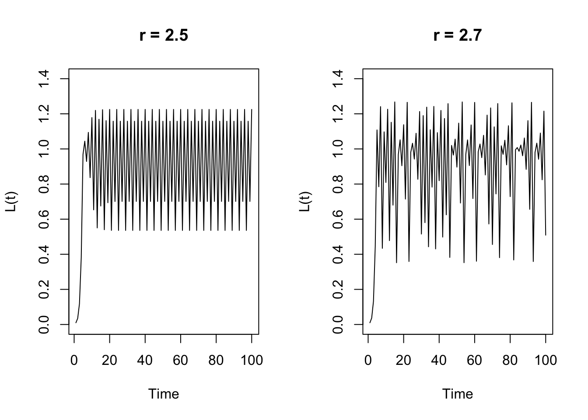
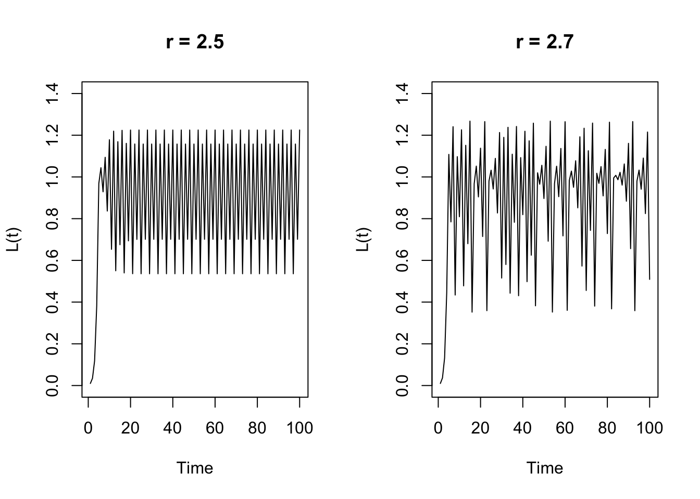

B.1 Time-varying parameters
Solutions in a spreadsheet
B.1.1 Solutions in R
The growth model by Van Geert (1991)
Different values for r:
library(plyr)
# Parameters
rs <- c(1.2, 2.2, 2.5, 2.7, 2.9, 3)
# Plot
op <- par(mfrow=c(1,2))
l_ply(rs,function(r){plot(growth.ac(r = r, Y0 = 0.01, type = "vanGeert"),
ylim = c(0,1.4), ylab = "L(t)", main = paste("r =",r))})


par(op)Different values for \(k\) reveal that the dispersion of values (variance) increases if the carrying capacity increases. This occurs because we are dealing with nonlinear changes to the values of \(Y\) and if larger values of \(Y\) are allowed by a hihger \(k\), these values will be amplified once they occur.
# Parameters
ks <- c(0.5, 0.75, 1, 1.5)
# Plot
op <- par(mfrow=c(1,2))
l_ply(ks,function(k){plot(growth.ac(r = 2.9, k = k, Y0 = 0.01, type = "vanGeert"),
ylim = c(0, 2), ylab = "L(t)", main = paste("k =",k))}) 

par(op)Stages and Jumps
growth.ac.cond <- function(Y0 = 0.01, r = 0.1, k = 2, cond = cbind.data.frame(Y = 0.2, par = "r", val = 2), N = 100){
# Create a vector Y of length N, which has value Y0 at Y[1]
Y <- c(Y0, rep(NA, N-1))
# Iterate N steps of the difference equation with values passed for Y0, k and r.
cnt <- 1
for(t in seq_along(Y)){
# Check if the current value of Y is greater than the threshold for the current conditional rule in cond
if(Y[t] > cond$Y[cnt]){
# If the threshold is surpassed, change the parameter settings by evaluating: cond$par = cond$val
eval(parse(text = paste(cond$par[cnt], "=", cond$val[cnt])))
# Update the counter if there is another conditional rule in cond
if(cnt < nrow(cond)){cnt <- cnt + 1}
}
# Van Geert growth model
Y[[t+1]] <- Y[t] * (1 + r - r * Y[t] / k)
}
return(ts(Y))
}
# Plot with the default settings (same as first step in the assignment)
xyplot(growth.ac.cond())
The ‘trick’ used here is to define the function such that it can take a set of conditional rules and apply them sequentially during the iterations. The conditiona rule is passed as a data.frame, but one could also use a list object.
(cond <- cbind.data.frame(Y = c(0.2, 0.6), par = c("r", "r"), val = c(0.5, 0.1)))## Y par val
## 1 0.2 r 0.5
## 2 0.6 r 0.1xyplot(growth.ac.cond(cond=cond))
Or, combine a change of r and a change of k
(cond <- cbind.data.frame(Y = c(0.2, 1.99), par = c("r", "k"), val = c(0.5, 3)))## Y par val
## 1 0.20 r 0.5
## 2 1.99 k 3.0xyplot(growth.ac.cond(cond=cond))
# A fantasy growth process
(cond <- cbind.data.frame(Y = c(0.1, 1.99, 1.999, 2.5, 2.9), par = c("r", "k", "r", "r","k"), val = c(0.3, 3, 0.9, 0.1, 1.3)))## Y par val
## 1 0.100 r 0.3
## 2 1.990 k 3.0
## 3 1.999 r 0.9
## 4 2.500 r 0.1
## 5 2.900 k 1.3xyplot(growth.ac.cond(cond=cond))Connected Growers
Somewhat more realstic would be to model a change of r as dependent on the values of another process. The proper ‘dynamical’ way to do this would be to define a coupled system of difference or differential equations in which the interaction dynamics regulate growth. An example is the predator-prey system discussed in the next assignment.
Using the ‘conditional’ rules on a number of seperate processes will ‘work’ as a model, but it isn’t exactly what is meant by interaction dynamics, or multiplicative interactions. Basically, these processes will be independent and non-interacting. The conditional rules that change the parameters are ‘given’.
# Generate 3 timeseries
Y1 <- growth.ac(k = 2, r =.2, type = "vanGeert")
# Y2 and Y3 start at r = 0.001
Y3 <- Y2 <- growth.ac(k = 2, r = 0.001, type = "vanGeert")
# Y2 and Y3 start when k is approached
c1 <- 1.6
c2 <- 2.2
Y2[Y1 > c1] <- growth.ac(r = .3, k = 3, type = "vanGeert", N = sum(Y1 > c1))
Y3[Y2 > c2] <- growth.ac(r = .5, k = 4, type = "vanGeert", N = sum(Y2 > c2))
# Make a nice plot
ts.plot(Y1, Y2, Y3,
gpars = list(xlab = "time (a.u.)",
ylab = expression(Y(t)),
main = expression(paste("'Connected' Growers ",Y[t+1]==Y[t]*(1 + r - r*Y[t]))),
lwd = rep(2,3),
lty = c(1:3),
col = c("darkred","darkblue","darkgreen")
)
)
legend(1, 3.8, c("Y1(0): r = .2",
paste0("Y2(",which(Y1 > c1)[1],"): r = .3"),
paste0("Y3(",which(Y2 > c2)[1],"): r = .5")),
lwd = rep(2,3), lty = c(1:3), col = c("darkred","darkblue","darkgreen"), merge = TRUE)